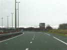
Grande-Synthe, tout là-haut chez les Ch'tis... Il y a même encore de la neige dans la campagne, une semaine après les chutes, il a dû en tomber un paquet !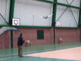
Début des hostilités samedi vers 14 h 30. La salle s'ouvre, elle est vaste et haute de plafond, parfait... Il y a déjà un cervoliste qui manie ce cerf-volant delta à vergue inférieure courbe, simple et bon volateur, léger et planant bien sans jamais se mettre dans des situations embarrassantes...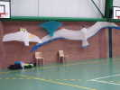
Beaucoup de lumière dans cette salle, avec un plafond transparent, ça change des tristes projecteurs. Pas énormément de monde, ce samedi, j'installe quand même ma panoplie !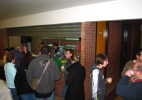
Bon, début à 15 h, fin à 17 h 30, il faut reprendre des forces. Une bonne bière nous attend, avec tous les accompagnements, dans le bar... Tout est bien prévu dans ce gymnase du Nord...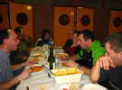
A table ! On s'assemble par groupes d'âges, je me mets là... Et le cassoulet entretient l'ambiance...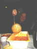
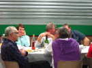
Du côté des anciens, l'ambiance est bonne aussi, et les bouteilles bien entamées...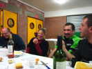
De notre côté, l'ambiance n'est pas mauvaise non plus, merci...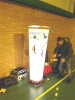
Après dîner, on revole un peu. Et Jeremy, Sébastien et Alain font marcher leurs maquettes, roulantes ou volantes, autos, avions, hélicos ! La Balise des Vent Courtois apporte un éclairage bienvenu aux maquettistes...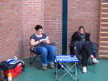
Dimanche matin, petit-déjeuner servi, pain tout frais et croustillant très appétissant ! Les filles font une petite pause préparatoire dans leur coin... Mais Marie, en convalo, a repris un petit coup de fatigue, aujourd'hui...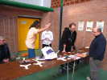
De nouveaux arrivants aujourd'hui : des boomeranguistes, par exemple, qui tiendront un atelier et feront des démos et initiations au long de la journée...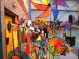
De son côté, Cerf-Volant Service a amené quelques bricoles égayantes et gère un atelier cerf-volant, Sleds et Eddies qui voleront Indoor pour les plus courageux !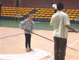
Les Raz'Moquets sont arrivés aussi, c'est-à-dire Yann Derweduwen et une nouvelle adhérente de... 8 ans que j'appellerai Clarence, mais dont j'ai un peu oublié le nom... Ils se concertent ici pour leur duo...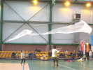
C'est parti, avec de nouveaux cerfs-volants deltas souples à longues traînes de tulle ...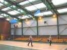
Prouvy est présent aussi, avec des Malards persos, qui volent plus au lieu d'être traînés (sans doute moins courbés) que ceux de Louis Sko, le génial créateur original ! Joli vol en duo, mais j'aimais bien le show varié de Cramay'ailes avec les amours des parents et le petit qui venait ensuite...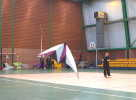
Jerémy n'a pas pratiqué depuis un moment, mais il n'a pas complètement perdu la main, loin de là ! Et il a toujours l'air de s' amuser, mais concentré quand même...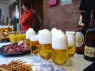
Le matin, c'était encore entraînement ! Une petite pause bière et autres pour préparer le déjeuner, on reprendra cet après-midi avec une succession de numéros pour les spectateurs...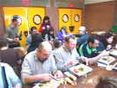
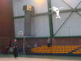
Ouverture du show, Michel Chantren débute avec le poisson qu'il avait utilisé lors de sa tournée avec le Cirque du Soleil...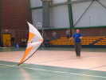
Bruno présente un joli numéro avec son deux-lignes favori...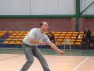
Sébastien idem, il est très bon et plus dynamique, privilège de la jeunesse...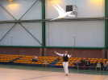
Yann présente des cerfs-volants sur cannes courtes, 2 à la fois ici, ses féeriques oiseaux blancs habituels qui ont l'air de jouer avec lui...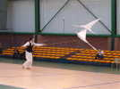
En tenue très select, mais toujours pieds nus à son habitude...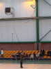
Florent, 5 ans, le fils de Dominique Miquet aura aussi son heure de gloire ! Il a commencé hier, avec la canne bien lourde pour lui, mais a vite appris à faire voler le cerf-volant par des mouvements adaptés...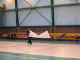
Jerémy avait été contaminé par les Crazy Drivers et sait aussi faire plein de jongleries avec un Révo, il le prouvera !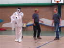
Tiens, deux clowns ont amené un Pierrot automate, ça vous dit quelque chose ?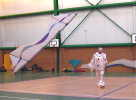
Ca alors, l'automate fait une belle démo de Révo, au-dessus des spectateurs au besoin ! Michel Chantren se démasquera finalement, dénoncé au micro par Dominique !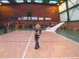
Un petit entracte convivial, pendant lequel les enfants peuvent venir sur le terrain essayer les cerfs-volants qu'ils ont construits, ou d'autres qu'on leur prête !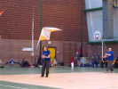
La Paire familiale de Cramayel fera ensuite une prestation deux-lignes bien synchronisée !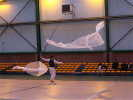
Yann revient avec ses deux cerfs-volants Delta-et-tulle et y ajoute même un oiseau pour faire le poids.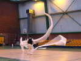
On voit un peu mieux ici les 3 cerfs-volants et la tenue des cannes !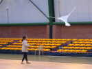
Clarence fera aussi un solo, avec un des oiseaux de Yann et une petite canne...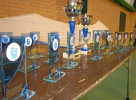
Pour finir, remise des prix, ou plutôt des souvenirs, de jolis trophées aux armes de Grande-Synthe, et 2 coupes au nom du maire. Clarence aura la plus grosse coupe, il faut encourager les vocations, et elle a bien donné...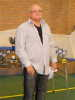
Même Michel aura son trophée pour récompenser son travail d'organisation au sein de la commune... Dommage, ça manquait un peu de spectateurs, manque de pub ? Mais on ne peut pas les forcer !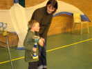
Florent, heureux et fier, aura aussi droit à sa coupe, qui fait la moitié de sa taille mais il est costaud...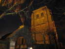
Bon, on se quitte, en cette saison, il fait déjà nuit, je roulerai un peu jusqu'à Watten et sa belle église Saint-Gilles (1236) au donjon-clocher de brique... C'est en fait un reste repris de l'Abbaye ND du Mont de Watten. Elle est sur la Route des Retables, mais je n'ai pu voir l'intérieur, à cette heure...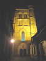
Particularité locale, les rues viennent carrément buter sur le portail, pas de parvis, ni de dégagement... Il faut dire que les maisons ont été construites en majorité avec les pierres des murailles de l'abbaye !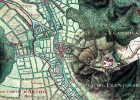
"Watten", c'est un "passage à gué", Watten dominait surtout un passage dans le marécage, on en voit la trace sur le plan d'époque (1728)... On note que la rivière séparait le Comté d'Artois de "la Flandres Maritime Française" où un gros fort a été construit sur le mont.